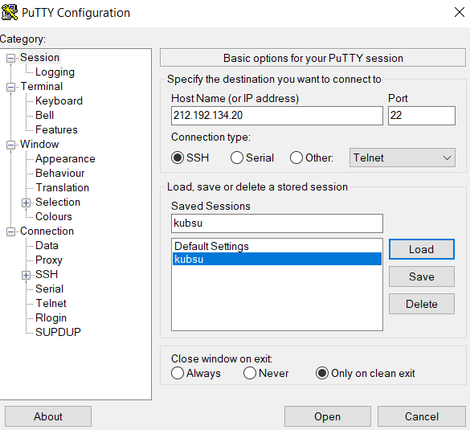
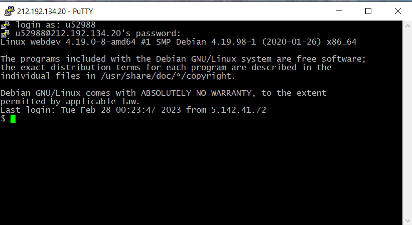
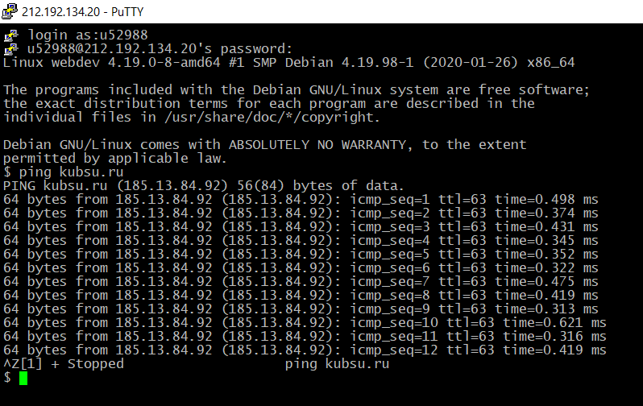
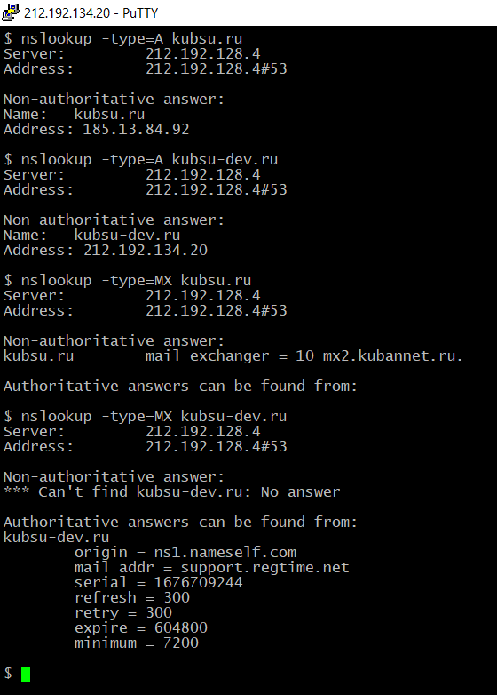
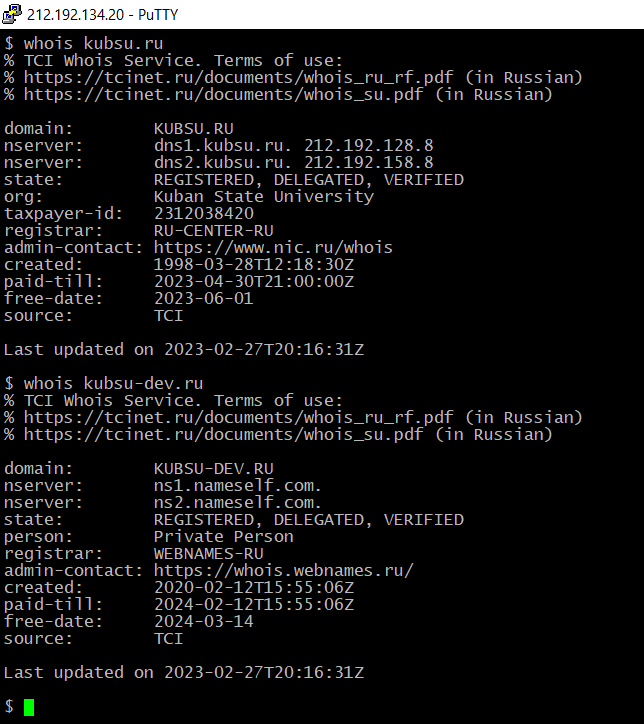
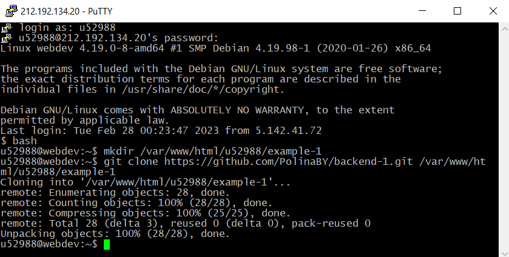
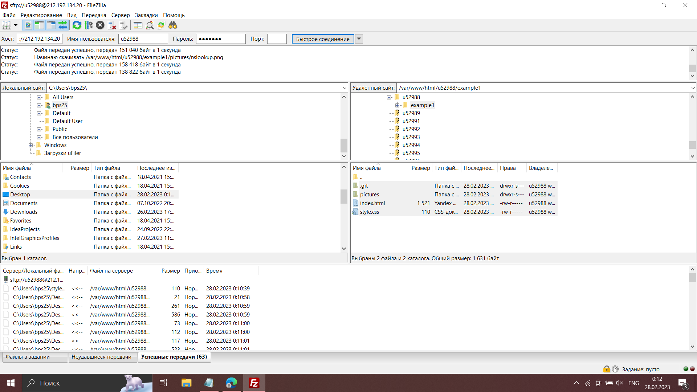

1.

С помощью "putty" подключаюсь к серверу kubsu
2.

С помощью "putty" подключаюсь к серверу, с помощью логина и пароля. Узнаю, что работаю на системе LINUX
3.

С помощью команды "ping" узнаю состояние соединения между устройством источника и назначения через IP-сеть
4.

С помощью команды "nslookup" узнаю A-запись (указывает соответствие доменного имени и IPv4-адреса)
и MX-записи (указывает на какой адрес почтового сервера должна направлятся электронная почта) доменов
5.

С помощью команды "whois" узнаю дату регистрации домена
6.

С помощью команды "gitclone" копирую репозиторий из Github на учебный сервер,
могу получить доступ к сайту с помощью ссылки http://u52988.kubsu-dev.ru/example-1/
8.

С помощью команды FileZilla соединяюсь с учебным сервером
и копирую на локальный компьютер файлы задания